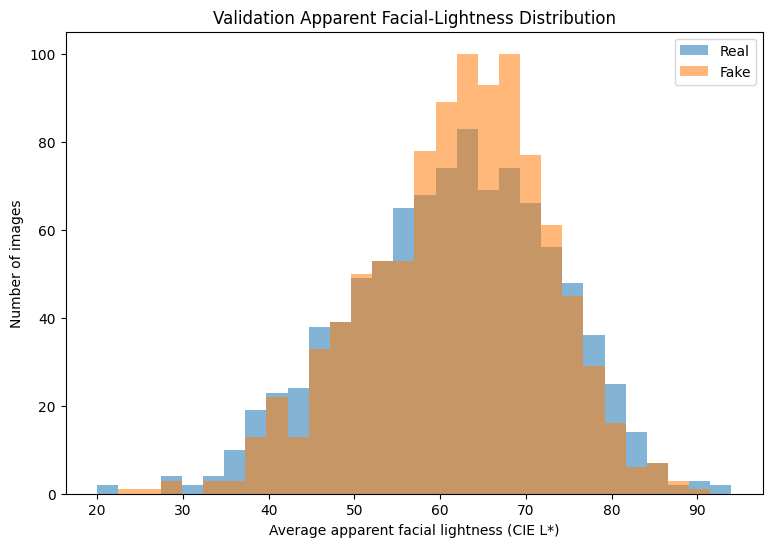
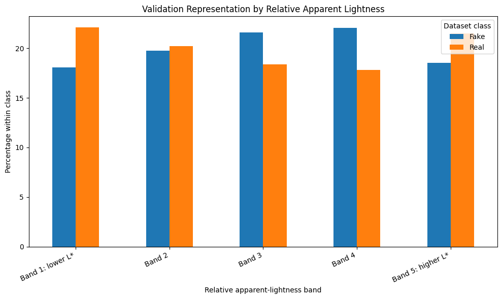

Screen, don't authenticate.
A classifier score is one review signal. It cannot prove who created an image, how it was edited, or whether its provenance is genuine.
Synthetic Sight is a research prototype and screening aid. The development process can reduce some risks through data controls, transparent evaluation, and representation checks—but it cannot erase the limits of the benchmark.
A classifier score is one review signal. It cannot prove who created an image, how it was edited, or whether its provenance is genuine.
The model was trained on FFHQ real faces and StyleGAN synthetic faces. New generators and real-world image conditions may behave differently.
The interface reports class scores, the decision threshold, and caution text instead of presenting the label as unquestionable truth.
Bias can be amplified—or mitigated
Bias is not a single property that disappears after training. It can enter through representation, the generator used to create synthetic images, preprocessing artifacts, evaluation choices, and the way people interpret the interface.
Underrepresented groups may experience uneven detector performance.
StyleGAN data may not represent newer diffusion models or future generators.
Compression, cropping, lighting, or other artifacts can become unintended predictive shortcuts.
A polished result can create unwarranted confidence without appropriate context.
Evaluate performance by subgroup or visual condition when defensible labels are available.
Use uniform image size, format, normalization, and face-preparation rules.
Test outside datasets and generator families to define generalization bounds.
Report scores, limitations, false-positive risks, and false-negative risks.
Representation check
The audit used face detection and CIE Lab L* to summarize the apparent lightness of forehead and cheek regions. Average visible lightness was comparable between real and synthetic validation images, although the distribution across bands differed.
These measurements describe visible image characteristics affected by lighting, exposure, camera processing, makeup, editing, and face-detection crop errors. They are not demographic labels or a fairness certification.

A limitation inside the audit
The face detector succeeded slightly more often on synthetic images than real images in the audited samples. That means the lightness analysis is conditional on detection success and can inherit selection bias from that first step.

Next audit step
The next useful analysis is to join lightness-audit rows directly to prediction error logs so potential performance disparities can be tested rather than inferred from representation alone.
Do not use this result as